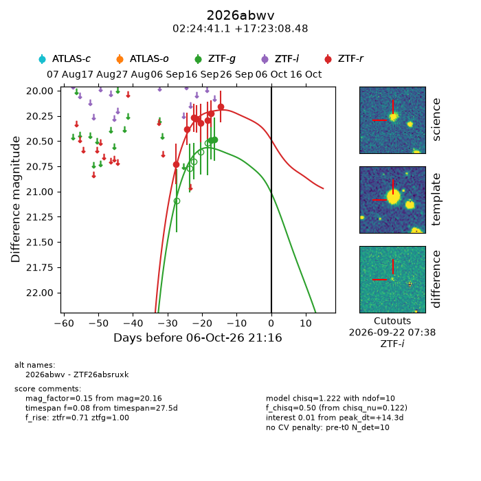
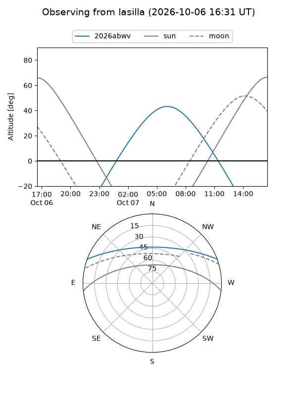
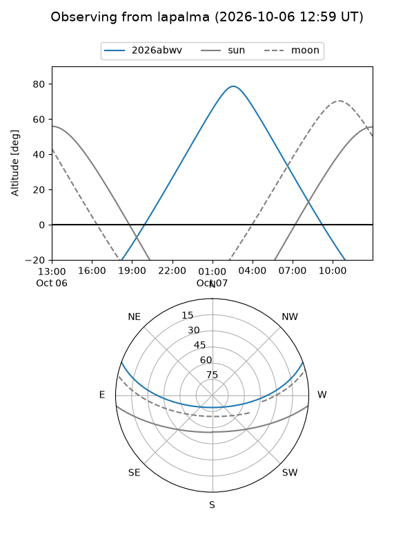
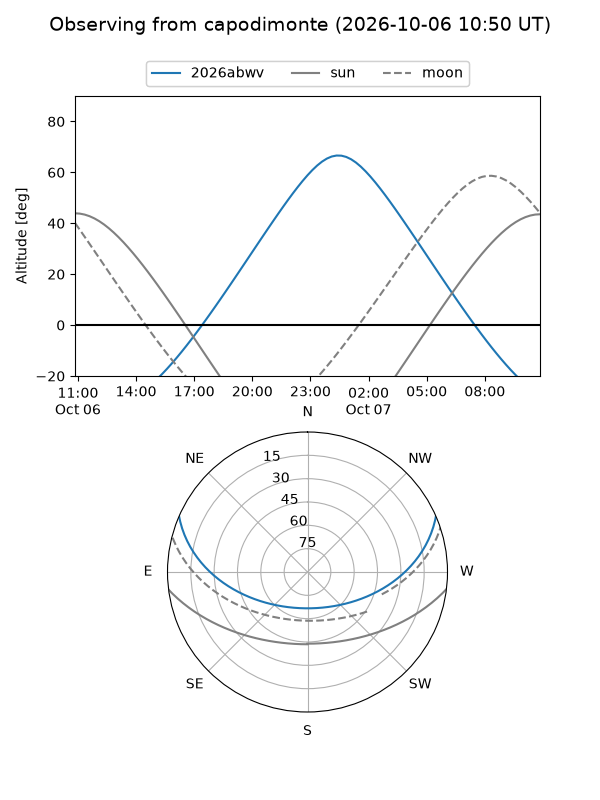
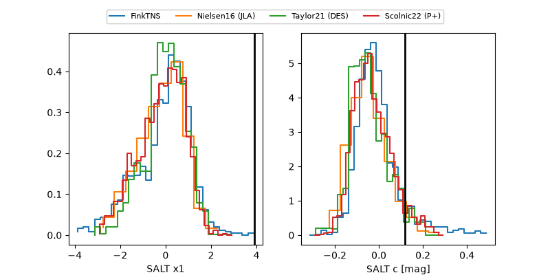

2026abwv
Target 2026abwv at 2026-10-07 07:54
Aliases and brokers:
FINK-ZTF: ztf.fink-portal.org/ZTF26absruxk
Lasair-ZTF: lasair-ztf.lsst.ac.uk/objects/ZTF26absruxk
ALeRCE-ZTF: alerce.online/object/ZTF26absruxk
YSE-PZ: ziggy.ucolick.org/yse/transient_detail/2026abwv
TNS name: wis-tns.org/object/2026abwv
Direct TNS query: direct search
alt names
ZTF26absruxk (ztf,fink_ztf)
2026abwv (tns,yse)
Coordinates:
equatorial (ra, dec) = 36.1714,+17.38569
equatorial (HMS+DMS) = 02:24:41.15,+17:23:08.48
galactic (l, b) = (152.5038,-40.07156)
Flags:
TNS type: nan
peak dt: +14.8
Photometry:
last ztfg=20.48, ztfr=20.16
2 ztfg, 8 ztfr detections
Lightcurve

Visibility



Additional plots
